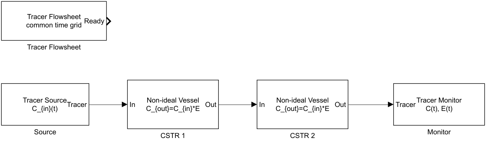
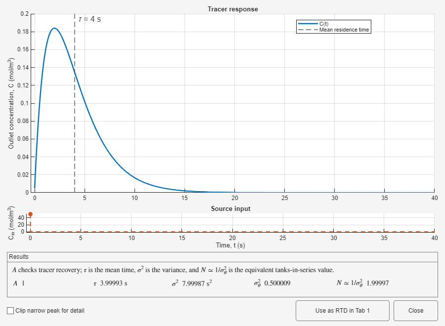
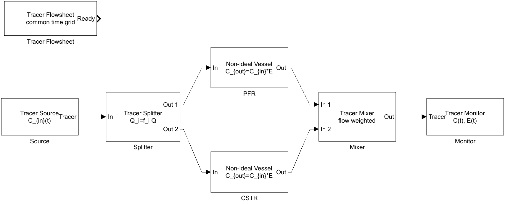
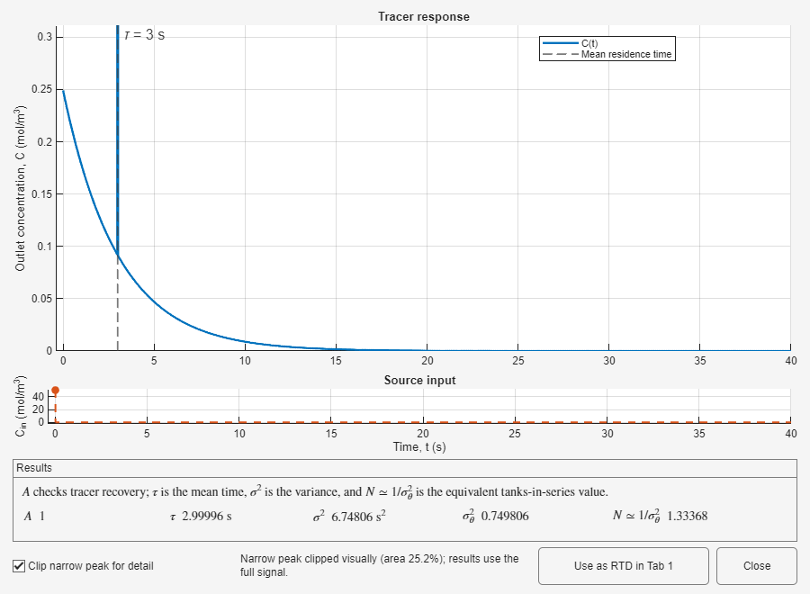
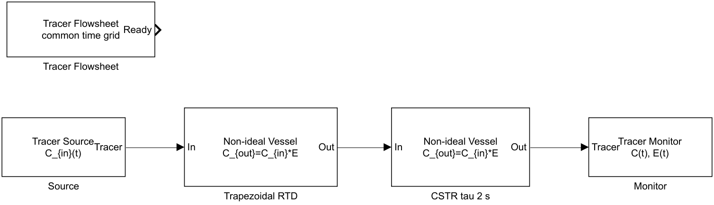
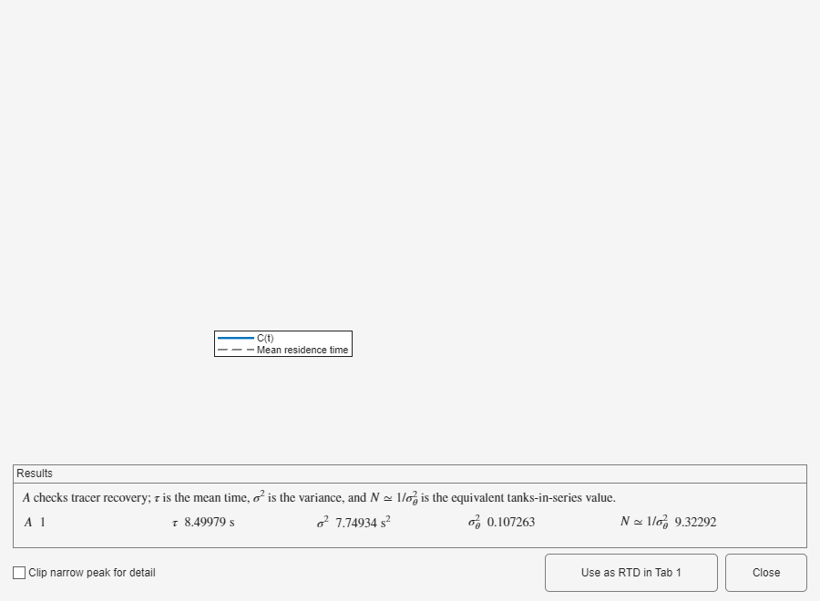

Restore each example from Open example..., inspect the block settings, run it, and compare its viewer with the expected series or parallel behavior.
Opening an example creates or restores a writable copy. If a copy already exists, restoring it discards edits in that example. Use the examples to explore settings, then create a separate flowsheet for your own case.
Two equal CSTR blocks with τ = 2 s produce the analytical tanks-in-series distribution with total τ = 4 s and N = 2. The second vessel broadens and delays the first response; the path RTD is the convolution of both exponentials.


The splitter sends 25% of Q through a PFR and 75% through a CSTR, both with τ = 3 s. The mixer creates a flow-weighted sum: a narrow plug-flow contribution appears over the broader mixed-vessel response.


The former Tab 6 series exercise is rebuilt as a visible network. A tabulated trapezoidal RTD feeds a CSTR with τ = 2 s. The resulting distribution matches the sequential convolution while making each physical stage explicit.


| Symptom | What to do |
|---|---|
| An edited example is replaced | Choose the option that opens the existing copy, or save your work under another model name before restoring. |
| The parallel curve is interpreted as an unweighted average | Read the splitter fractions; the mixer weights each branch by Q. |
| SEC01 is searched for as a Tab 6 workflow | Open the tracer example; the exercise is now represented by its two vessel blocks. |